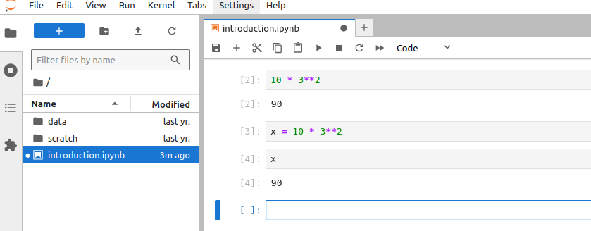

Studio 1: Introduction to Jupyter Hub
In this Session we introduce the computational environment for the course.
Logging on to Jupyter Hub
Each registered student is given an account on our course Jupyter Hub installation.
If you are on campus, and using a campus IP, go to http://130.191.118.182/hub/login
Your Username is the prefix of your SDSU email (the part before the @).
For the Password, you set that the first time you log on. It can be anything you choose, but you must remember it.
If you are off-campus, you must first connect to the university’s Virtual Private Network.
Interface
We will be exploring the components of the Jupyter Lab Interface.
- Main work area
- left sidebar
- menu bar
- file browser
Main work area
The main work area arranges activities and documents into panels of tabs.
Documents can be notebooks, text files, while activities can be terminals or code consoles.
It currently has a single tab entitled Launcher which contains a set of, well, launchers.
Notebooks
Let’s open our first document.
Double-click the Square icon under Notebook in the Launcher tab.
This will result in:
Now, the main work area has a single tab with the title Untitled.ipynb. This is our first jupyter notebook.
The extension ipynb tells us so.
We also see that the filename is showing up in the file browser.
It is good practice to give your notebooks (and files) meaningful names. To do so you can right click on the tab or in the file browser and give it a new name introduction.ipynb.
Cell Types
A notebook is composed of cells. Currently, our notebook as a single cell.
Cells can be of different types. There are three possible types:
- Code
- Markdown
- Raw
What happens with the contents of a cell depends upon its type. We can have cells of different types in the same notebook - in other words, all the cells in a notebook do not have to be of the same type. This opens up rich possibilities for creating computational documents.
Code
The type of a cell is indicated in the dropdown of the tabs icon bar. Our current cell is of type Code.
A code cell should contain, well, code. By this we mean, a set of statements that the kernel for our language can understand. Think of the kernel as a machine that is going to take our code and convert it into some type of result or action.
In our case, the kernel is Python. This is indicated in the upper right portion of the notebook tab.
Let’s enter some code in our code cell:
- Enter
3**2 Shift-return
When we used the key-chord Shift-return (while holding the shift key down also hit return) from inside the code cell, this took the contents of the cell 3**2 and passed it off to the Python interpreter. Since this was legit Python code, we got a result of 9 in an output cell.
Then the interface gives us a new empty code cell, so we can continue if we wish.
But, instead of continuing, let’s say we wanted a different calculation. Put the cursor back in the first code cell and change this to 10 * 3**2 and rerun the cell.
Again, this is legit Python code so we get a new result. The other things that have changed are the numbers on the left of the cells. Now we have a [2] in front of the code cell and its output cell. This indicates that we have run 2 code cells in this session.
The current cell is indicated by the blue vertical bar. This is where we would enter new code as we progress.
Let’s progress.
In the current cell, enter x = 10 * 3**2 and run the cell.
We don’t get an output cell in this case. This is because our code is an assignment statement. This means we assign the value of the statement on the right of the = into the variable x on the left side.
To see the value of x, enter x in the next code cell and run the cell:

With this, we have the basics of entering Python code and running it. Let’s turn our attention to the next type of cell: Markdown.
Markdown
Markdown is a markup language invented by John Gruber to make it easier for humans to write web pages.
Let’s change the type of the current cell. There are two ways to do this.
The first way is to click on the cell type dropdown (currently set to Code) and select Markdown. This results in:
We still have the blue indicator to the left of the current cell. But we no longer of the [ ]: next to the cell.
To enter some Markdown, put the cursor in the cell and enter:
This next word will be **bold**.
Then run the Markdown cell with Shift-return:
This is a bit different from what we saw when we ran a code cell. In the case of a Markdown cell, what happens is that when we “run” the cell, the contents of the cell gets handed off to a different kernel, one that knows the Markdown markup. The kernel then translate from the markdown input and returns actual html that gets rendered in the same cell.
We can change our cell by double-clicking in it. Let’s add some more Markdown by changing the cell contents to:
## Markdown Cells
Here we are demonstrating `Markdown`.
The next word will be in **bold**.
The next word will be in *italics*.
### Lists
We can do unordered lists:
- dog
- cat
- monkey
As well as ordered lists
1. dogs
1. monkey
1. catOnce we have entered this, “run” the cell with Shift-return:
Before we do more with Markdown, let’s learn a bit about our last cell type Raw.
Raw
To see the utility of the Raw cell type, double-click into the Markdown cell. In the cell, copy all the contents of the cell (click and drag with the mouse, then Control-C (Linux/Windows) Command-C (Mac) ).
Move the cursor into the next cell and paste (Control-V (Linux/Windows), Command-V (Mac)).
Then, in this last cell change the cell type to Raw so your screen should look like:
Next, jump up to the Markdown cell, and run that cell to render it. Then, render the Raw cell:
This shows us that we can use Raw cells to display the syntax used to get a rendered cell. This can be helpful to document how things were done.
Cell Modes
In addition to having different cell types, cells have two modes.
- Command Mode
- Edit Mode
These are mutually exclusive modes - only one is active. In other words, you a cell is either in command mode or edit mode.
Command Mode (Running Cells)
In command mode we can, not suprsingly, run cells. We already know how to do this. Make the cell active (by moving the cursor to the cell), then use Ctrl-return.
How do we know we are in command mode? A couple of ways.
If you are in a code cell, if the cell does not have a blue border, you are in command mode:
If the code cell has a blue border you are in edit mode:
If you are in edit mode and want to switch to command mode, use the Esc key.
If you are in command mode and want to switch to edit mode, simply click in the cell to start editing.
In addition to letting us run cells, command mode also allows us to manipulate cells. The two sets of most common manipulations we do in command mode are:
- Cut and paste cells (move)
- Split and merge cells
To demonstrate the first, recall the figure that had the Raw cell below the Markdown cell. It might be more helpful to have the Raw cell before (above) the Markdown cell.
To do this.
From the empty code cell:
- Enter command mode (
Esc) - Hit the
kkey. This moves the cursor up into the raw cell. - Hit the
xkey. This will cut the current cell. - Move up two cells by repeating
kk - Paste the cut cell with
v
Your notebook should now look something like:
To demonstrate splitting cells, let’s say we want to break our Markdown cell into two separate Markdown cells such that the Lists subsection is in its own cell.
To do this,
- Make the Markdown cell active by moving down one with
j. - Once the Markdown cell is active, get into edit mode (click into the cell).
- Move the cursor to the empty ilne before
Lists. Ctrl-Shift--(That’s theCtrlkey held down, with theShiftkey followed by-).
The result should be:
To merge cells together.
- Enter command mode
Shift-kto select the current cell and the cell above it.Shift-mto merge the two cells.
Edit Mode
Let’s create an empty cell and edit it. Assume we want to add a new cell above the current cell. This is done with a.
Let’s make this a Markdown cell, using the second approach I hinted at above.
- Enter command mode
m
Note that it is lower-case m here. Now we can enter Markdown by clicking in the new cell and filling it in with whatever we want. For example:
### Using Raw and Markdown cells
The cell below will be the rendered markdown. The cell above is the raw markdown in a raw cell for referenceRendering the cell should give:
As our notebooks grow, it would be nice to be able to jump around without endlessly scrolling. Remember the table of contents that lives in the Left sidebar? This can come in handy when you have a long Markdown document and can use the TOC to jump around quickly.
To see this work, let’s first go to the top of the notebook by scrolling up. Then, 1. Add a new cell above the current cell. 2. Make it a Markdown Cell 3. Enter ## Python code cells 4. Render the cell
After rendering, the cell, click the table of contents icon in the left sidebar:
You can now click on the entries in the table of contents to jump to that section/subsection in the notebook.
Saving and Exporting
It is good practice to save your notebook as you go. Use Ctrl-s to do so or Command-s (mac).
If there are any unsaved changes, the little black dot in the notebook tab will be visible:

After saving your notebook, it will live on the course server, so you can come back to it later (see logging off below). Sometimes, you will need to export or download a copy of your notebook to hand in for credit. To do this:
- Make sure the notebook you want to save is the active tab in the main work area
- Click on the file browser icon in the left side bar.
- From the Menu bar:
File-Save and Export Notebook As-pdf
This should create a pdf file on your local computer that you can hand in.
If you get an error that looks like:
This is due to having the Raw cell in the notebook. To fix it, simply delete the Raw cell and try to export again. We won’t be using Raw cells in the assignments so this won’t be an issue moving forward.